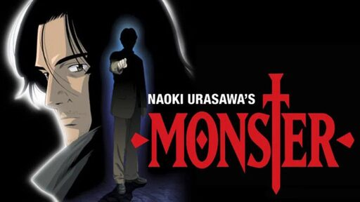
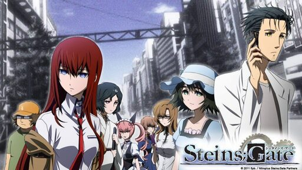
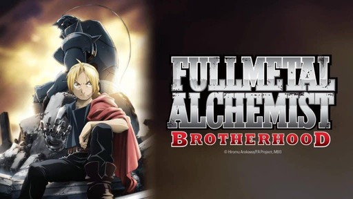

Melhores animes de todos os tempos
Os animes certamente marcaram a infância e a juventude de uma legião de fãs ao longo dos anos e deixaram sua marca na cultura pop mundial. A lista traz os queridinhos da público mais bem avaliados que estão disponíveis em plataformas como Netflix, Amazon Prime Video e Crunchyroll.
Desde a década de 90 os animes se tornaram uma febre no Brasil e hoje seguem alta com diversas opções de streaming para consumi-los. Existem uma infinidade de animações sobre diversos temas e muitas vezes é até difícil escolher uma obra para assistir. No entanto, há certos títulos que se destacam como verdadeiras obras-primas, conquistando tanto o público quanto a crítica especializada. Por isso, listei aqui 5 melhores animes de todos os tempos segundo a crítica.
Monster (2004)
Gintama (2006)
Hunter x Hunter (2011)
Steins;Gate (2011)
Fullmetal Alchemist Brotherhood (2009)
5. Monster (2004)

Monster é um anime baseado no mangá de mesmo nome, criado por Naoki Urasawa. A história gira em torno do brilhante cirurgião Dr. Kenzo Tenma, que se depara com a difícil escolha de salvar a vida de um jovem garoto ou do prefeito da cidade. Após a decisão, uma série de eventos macabros e conspirações se desenrolam. Monster é aclamado por sua trama complexa, personagens bem desenvolvidos e atmosfera sombria.
Com narrativa madura e temáticas profundas, o anime aborda questões éticas, psicológicas e sociais, cativando o público e garantindo seu lugar como um dos melhores animes de todos os tempos. Por se tratar de um seinen (obras voltadas para o público mais adulto), Monster não possui a mesma popularidade que outros nomes dessa lista, porém, é unânime a qualidade da obra, tanto do anime quanto do mangá.
4. Gintama (2006)

Gintama é um anime que mescla comédia, ação e drama de forma única. Situado em um Japão fictício dominado por alienígenas, a série segue a vida do preguiçoso samurai Gintoki Sakata e seus excêntricos amigos. O que faz Gintama se destacar é seu humor irreverente e sagaz, combinado com arcos de história emocionantes e personagens cativantes.
Além disso, a obra é conhecida por suas referências à cultura pop, paródias inteligentes e críticas sociais bem-humoradas. A narrativa versátil e imprevisível de Gintama, que pode alternar entre momentos hilariantes e emocionantes, solidifica seu lugar como um dos melhores animes de todos os tempos. A obra de Hideaki Sorachi é um sucesso completo, possuindo várias temporadas e todas elas sendo extremamente bem avaliadas.
3. Hunter x Hunter (2011)
Hunter x Hunter é um anime baseado no mangá de Yoshihiro Togashi, o mesmo autor de Yu Yu Hakusho. A história acompanha Gon Freecss, um jovem determinado a se tornar um Hunter para que ele possa um dia encontrar seu pai, que também era um Hunter.
O anime é amplamente aclamado por sua narrativa complexa, personagens bem desenvolvidos e temas profundos explorados ao longo da história, como amizade, coragem e busca pelo sentido da vida. Além disso, Hunter x Hunter se destaca por sua trama imprevisível, reviravoltas inteligentes e batalhas épicas. Com sua animação e trilha sonora de qualidade, o anime conquistou uma legião de fãs.
2. Steins;Gate (2011)

Steins;Gate é um anime que mescla elementos de ficção científica e viagem no tempo. A história gira em torno de Okabe Rintarou, um jovem cientista excêntrico que descobre uma maneira de enviar mensagens para o passado, desencadeando uma série de eventos que ameaçam o mundo que ele conhece.
O enredo inteligente e intrincado, combinado com personagens carismáticos e desenvolvimento emocional, cativa os espectadores desde o primeiro episódio. Steins;Gate é elogiado por sua narrativa complexa, quebra de convenções, diálogos afiados e reviravoltas surpreendentes, tornando-o um marco na animação japonesa e uma experiência imperdível para os fãs de anime.
1. Fullmetal Alchemist Brotherhood (2009)

E talvez a medalha de ouro não seja surpresa para ninguém. Fullmetal Alchemist: Brotherhood é um anime baseado no mangá da mangaká Hiromu Arakawa, onde a história segue os irmãos Edward e Alphonse Elric, que buscam a Pedra Filosofal para restaurar seus corpos após uma tentativa de ressuscitar a mãe com a alquimia dar errado.
Com uma trama complexa e emocionalmente cativante, o anime aborda temas como perda, sacrifício e a natureza humana. Além disso, possui uma animação deslumbrante, trilha sonora marcante e personagens profundamente desenvolvidos. Sua narrativa bem construída, equilíbrio entre ação e drama, e uma conclusão satisfatória, fazem de Fullmetal Alchemist: Brotherhood uma obra-prima aclamada sendo considerado por muitos, e forma quase unânime como o melhor anime de todos os tempos.